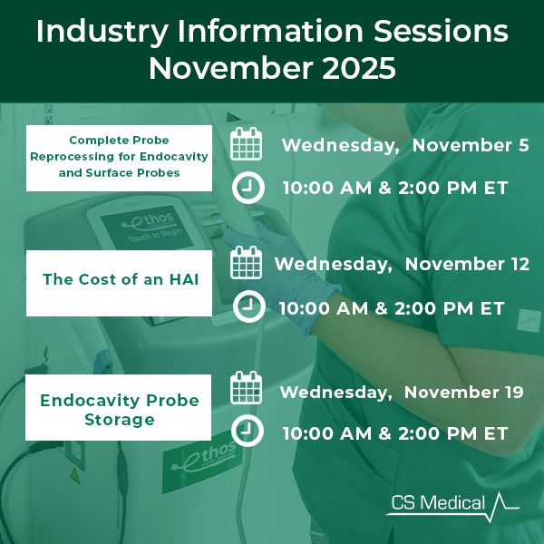
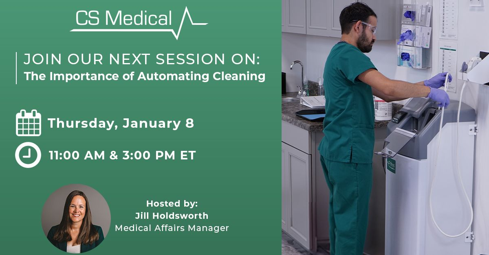
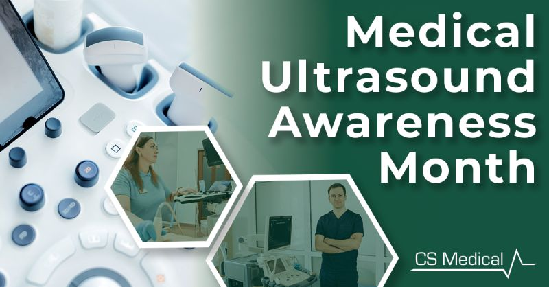
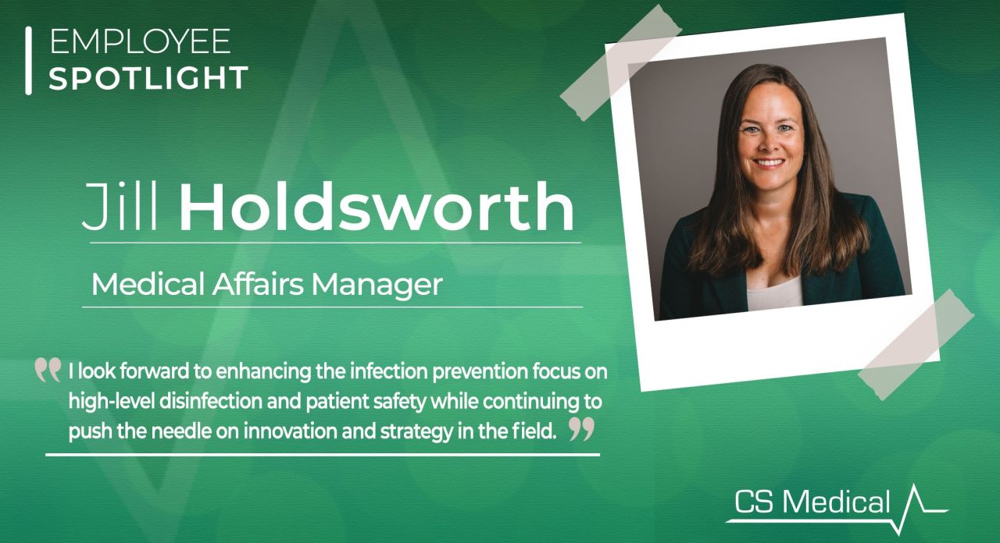
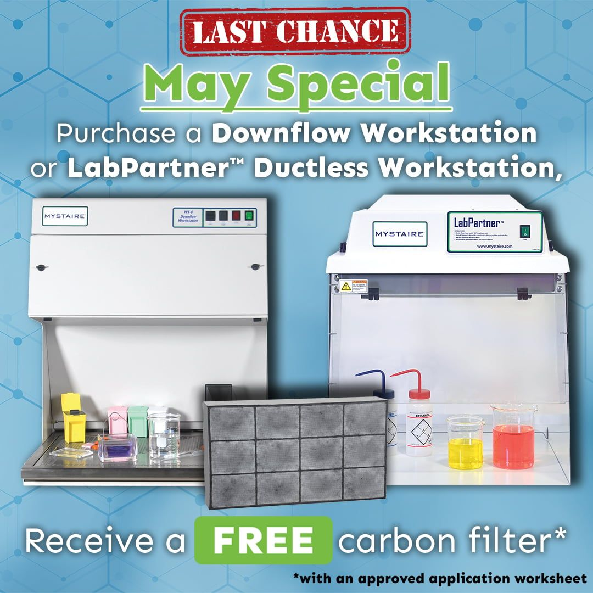
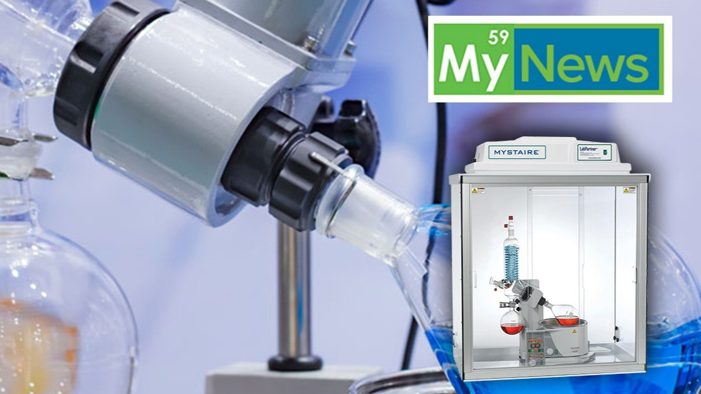
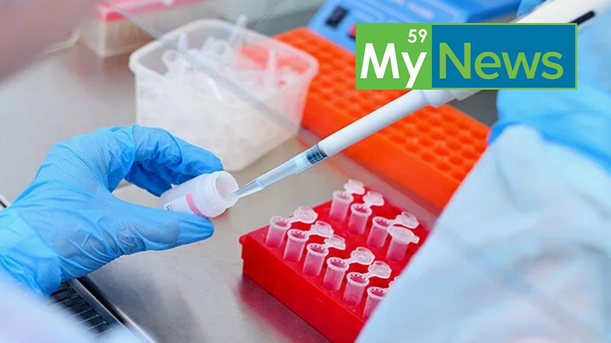

AMT Group: B2B lead gen for two product lines
The setup: one marketing role supporting two subgroups — CS Medical and Mystaire — with email/social tracking, nationwide trade shows, and print + digital ads feeding distributor outreach and high-volume eblasts.
Scope and work samples below. Performance data is client-confidential — the measurement notes at the bottom show what was tracked and what can be shared on request.
Subgroup 1: CS Medical
Focus: education-led demand gen for ultrasound probe reprocessing — info sessions, awareness moments, and people-first storytelling.




- Streamlined email + social tracking to sharpen campaign reads
- Ran session promotions + awareness and spotlight series for nurture
- Supported trade shows: booth setups, freight for sensitive gear, attendee travel
Subgroup 2: Mystaire
Focus: offer-led demand gen for lab workstations — one clear promo, one deadline — plus a repeatable “My News” content series.

My News series — same badge, three stories


- Mirrored tracking + reporting so both lines compare cleanly
- Shared trade show ops with line-specific booth messaging
- Segmented eblasts by distributor vs end-user where possible
What was measured
Aggregates only — no PII and no client revenue figures published.
- Email platform: sends, opens, CTR, replies / leads per blast (aggregates, no PII)
- Trade shows: leads per show, cost per lead, follow-up conversion (with owner OK)
- Ads: placements, spend, landing-page sessions via UTMs
Tools
Email marketing • Social tracking • Trade show ops • Print + digital ads • B2B lead gen • UTMs